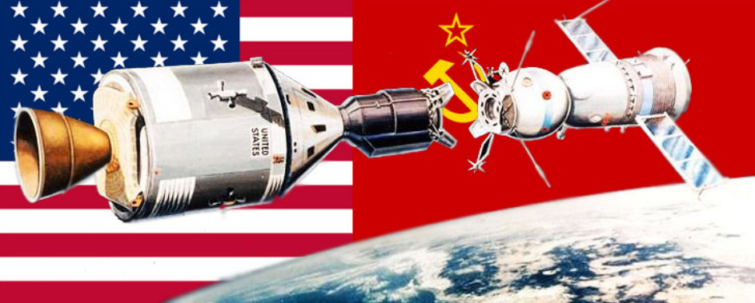

The Cold War
The Cold War began not too long after World War II ended in 1945. Although the Soviet Union was an important member of the Allied Powers, there was great distrust between the Soviet Union and the rest of the Allies. The Allies were concerned with the brutal leadership of Joseph Stalin as well as the spread of communism. The Cold War came to an end with the collapse of the Soviet Union in 1991.
The Cold War was often fought between the superpowers of the United States and the Soviet Union in something called a proxy war. These were wars fought between other countries, but with each side getting support from a different superpower. Examples of proxy wars include the Korean War, the Vietnam War, the Yom Kippur War, and the Soviet Afghanistan War.
The United States and the Soviet Union also tried to fight the Cold War by demonstrating their power and technology. One example of this was the Arms Race where each side tried to have the best weapons and the most nuclear bombs. The idea was that a large stockpile of weapons would deter the other side from ever attacking. Another example was the Space Race, where each side tried to show that it had the better scientists and technology by accomplishing certain space missions first.